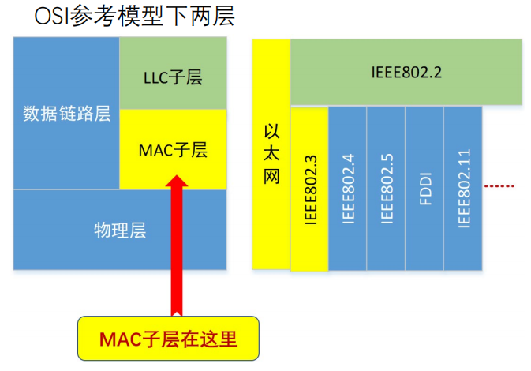

介质访问子层 MAC
MAC 子层在哪里？
数据链路层分为两个子层：
• MAC子层：介质访问
• LLC子层：承上启下（弱层）

信道分配问题
信道：信号的通道
常见的接入情形
- 点到点信道：信道直接连接两个端点
- 比如：家中计算机通过modem连接到电信公司端局
- 多点访问信道： 多用户共享一根信道
- 比如：右图是以太网的典型拓扑，早期星型拓扑是集线器，现在几乎都是交换机，当使用集线器或交换机工作在半双工模式的时候，它的逻辑拓扑是总线式的，信道是共享的
常见的局域网拓扑
-
总线拓扑、星型拓扑、环型拓扑
-
共同点：共享一根信道（别称：广播信道、多路访问信道、随机访问信道）
存在的一些问题
广播信道存在的问题
- 可能两个（或更多）站点同时请求占用信道
解决办法：介质的多路访问控制
- 在多路访问信道上确定下一个使用者（信道分配）
新的问题
怎么介质访问控制（分配信道）？
-
静态分配
-
动态分配
静态分配
- 静态分配方法：TDM、FDM
- 静态分配的排队论分析（ M/M/1排队系统模型）
- M（顾客到达时间间隔分布）
- 帧到达时间间隔服从指数分布
- 平均到达率（输入率）：λ 帧/秒
- M（服务时间分布）
- 帧长度服从指数分布，平均长度1/µ 位/帧
- 信道容量为C 位/秒，则信道服务率为µC 帧/秒
- 1（并列服务台个数）
- M（顾客到达时间间隔分布）
- 子信道的平均延迟 $$ T_{FDM}=\frac{1}{\mu (C/N)-(\lambda/N)}=\frac{N}{\mu C-\lambda}=NT $$
- 静态分配的特点
- 问题
- 资源分配不合理，不满足用户对资源占用的不同需求
- 有资源浪费，效率低
- 延迟时间增大N倍
- 适用情况
- 适于用户数量少且用户数目固定的情况
- 适于通信量大且流量稳定的情况
- 不适用于突发性业务的情况
- 设计动态分配的方法
- 目的1：更好地满足需求
- 目的2：提高信道利用率
- 问题
多路访问协议
三大类多路访问协议及小分类
- 随机访问协议
- 特点：冲突不可避免
- 受控访问协议
- 特点：克服了冲突
- 有限竞争协议
- 利用上述二者的优势
随机访问协议
ALOHA协议
纯ALOHA协议
- 原理：想发就发！
- 特点
- 冲突：两个或以上的帧
- 随时可能冲突
- 冲突的帧完全破坏
- 破坏了的帧要重传
- 定义
- 帧时：发送一个标准长的帧所需的时间
- 服从泊松分布
- 一个帧时内用户产生新帧：均值N个
- 一个帧时内信道中产生的帧（包括重传）：均值G个
- 分析：
- 0< N < 1，轻载N接近0，重载N接近1
- G >= N，轻载G=N（无冲突），重载G>N（冲突/重传）
- 概率
- \(Pr[k]=G^ke^{-G}/k!\) (一个帧时内信道中产生k个帧，泊松分布)
- \(Pr[k=0]=e^{-G}\) （一个帧时内信道中产生0个帧）
性能分析
- 吞吐量 (Throughout) S
- 在发送时间 T 内成功发送的平均帧数，显然 \(1<S<1\)
- S = 1 时分组一个接一个地发送出去，帧之间没有空隙。一般用S接近于1的程度来衡量信道的利用率
- 运载负载 (Carried load) G，又称网络负载
- 时间T内所有通信站总共发送的帧平均值(包括原发和重发的分组)。
- 显然，G≧S，只有在不发生冲突时G才等于S。当重负载(G>>1) 时，冲突频繁
- \(P_0\)：\(P_0\) 是一帧发送成功(即未发生冲突)的概率。就是发送成功的分组在已发送分组的总数中所占的比例 $$ S=G\times P_0 $$
如何计算\(P_0\)
- 单向传播延迟Delay：D
- 冲突危险期：2D
- 生成帧均值：2G
- 不遭受冲突的概率：\(P_0=e^{-2G}\)
注意
\(P_0\) 与 \(P[0]\) 是两个完全不同的概念
- \(P_0\) 是连续两个T的时间内都没有其它帧生成的概率
- \(P[0]\) 是单位时间内内没有帧生成的概率
纯ALOHA协议的性能
- 将 \(P_0=e^{-2G}\) 代入 \(S=GP_0\) 得：\(S=Ge^{-2G}\)
- 求吞吐率S的极大值：\(S′=e^{-2G}–2Ge^{-2G}= 0\)
- 当G = 0.5 时，S ≌0.184
- 即纯ALOHA信道的利用率最高为18.4%
分隙ALOHA(Slotted ALOHA)
- 工作原理
- 把时间分成时隙(时槽)
- 时隙的长度对应一帧的传输时间。
- 帧的发送必须在时隙的起点。
- 冲突只发生在时隙的起点
性能分析
冲突危险期变成 D
- 在G = 1 时得到最大吞吐率：
- \(S_{max}\) = 1/e ≌0.368
- 该值是纯ALOHA S值的两倍
CSMA
- 特点：先听后发
非持续式CSMA
- 特点
- 经侦听，如果介质空闲，开始发送
- 如果介质忙，则等待一个随机分布的时间，然后重复步骤①
- 好处
- 等待一个随机时间可以减少再次碰撞冲突的可能性
- 缺点
- 等待时间内介质上如果没有数据传送，这段时间是浪费的
持续式(指1-持续式)CSMA
- 特点
- 经侦听，如介质空闲，则发送
- 如介质忙，持续侦听，一旦空闲立即发送
- 如果发生冲突，等待一个随机分布的时间再重复步骤①
- 好处：持续式的延迟时间要少于非持续式
- 主要问题：如果两个以上的站等待发送，一旦介质空闲就一定会发生冲突
p-持续式CSMA
- 特点
- 经侦听，如介质空闲，那么以 p的概率 发送，以(1–p)的概率延迟一个时间单元发送
- 如介质忙，持续侦听，一旦空闲重复步骤1
- 如果发送已推迟一个时间单元，再重复步骤1
- 注意
- 1-持续式是p-持续式的特例
先听再发，避免了冲突吗？
- CSMA：如侦听到介质上无数据发送才发送，发送后还会发生冲突吗？
- 肯定会!
- 两种情形
- (1) 同时传送; (2) 传播延迟时间
- 冲突窗口
- 发送站发出帧后能检测到冲突（碰撞）的最长时间
- 是一个时间区间
- 数值上：等于最远两站传播时间的两倍，即2D
CSMA/CD （1-持续）
- 原理：“先听后发、边发边听”
- 过程
- 经侦听，如介质空闲，则发送。
- 如介质忙，持续侦听，一旦空闲立即发送。
- 如果发生冲突，等待一个随机分布的时间再重复步骤a。
边发边听：是否发生了冲突？
- 一旦冲突，发送Jam(强化)信号
- t4时刻：甲检测到冲突，发送Jam
- t3时刻：乙检测到冲突，是否发送？
怎么才能侦听到冲突
各种CSMA的性能比较
- CSMA/CD：1-持续CSMA
- 以太网采用了CSMA/CD
- 吞吐量：比ALOHA高，比P-持续式CSMA低
- 冲突：比ALOHA少，比P-持续式高
- P-持续式付出了高延迟的代价
受控访问协议
- 特点：克服了冲突
位图协议（预留协议）
- 竞争期：在自己的时槽内发送竞争比特
- 举手示意
- 资源预留
- 传输期：按序发送
- 明确的使用权，避免了冲突
位图协议的信道利用率分析
- 假设有N个用户，需N个时隙，每帧d比特
- 信道利用率
- 在低负荷条件下：d/(d+N) （N越大，站点越多，利用率越低）
- 在高负荷条件下：d/(d+1)，接近100%
- 缺点：位图协议无法考虑优先级
令牌传递(不太重要)
- 令牌：发送权限
- 令牌的运行：发送工作站去抓取，获得发送权
- 除了环，令牌也可以运行在其它拓扑上，如令牌总线
- 发送的帧需要目的站或发送站将其从共享信道上去除；防止无限循环
- 缺点：令牌的维护代价
二进制倒计数协议
- 站点：编序号，序号长度相同
- 竞争期：有数据发送的站点从高序号到低序号排队，高者得到发送权
- 特点：高序号站点优先
二进制倒计数协议的信道效率分析
- N个站的二进制编码所需位数是 \(log_2N\) 位
- 信道的利用率为：\(d/(d+log_2N)\)
- 如果规定每个帧的帧头为发送地址，即竞争的同时也在发送。则效率为100%
有限竞争协议
自适应树搜索协议
- 在一次成功传输后的第一个竞争时隙，所有站点同时竞争。
- 如果只有一个站点申请，则获得信道。
- 否则在下一竞争时隙，有一半站点参与竞争（递归），下一时隙由另一半站点参与竞争
- 即所有站点构成一棵完全二叉树
以太网
经典以太网
物理层
- 最高速率10Mbps
- 使用曼彻斯特编码
为什么任意两个接法器之间的距离不得超过2.5km？
距离越大，RTT越大，需要设置的最短帧长越大，会降低传输效率。
MAC子层协议
- 常用的以太网MAC帧格式有两种标准
- DIX Ethernet V2 标准(最常用的)
- IEEE 的 802.3 标准
- MAC帧中的源地址和目的地址长度均为6字节
- 源地址后面的两个字节，Ethernet V2将其视为上一层的协议类型，IEEE802.3将其视为数据长度。
- 数据字段不足46字节，需要填充整数字节（Padding）至46字节，以保证以太网MAC帧不小于64字节。(小于64 字节的帧都是由于冲突而异常中止的无效帧)
- 校验和
- FCS, Frame Check Sequence
- 使用CRC32计算除了校验和以外的其他字段
二进制指数后退
- 确定基本退避时间槽，其长度为以太介质上往返传播时间(\(2\tau\)) ，以太网中设为512比特时间
- 定义重传次数 k ，k ≤ 10，即 k = min[ 重传次数 , 10 ]
- 从整数集合[0,1,…, (2k −1)]中随机地取出一个数，记为 r ；
- 重传所需的时延就是 r 倍的时间槽 \(2\tau\)；
- 当重传达 16 次仍不能成功时即丢弃该帧，并向高层报告。
以太网性能
交换式以太网
- 使用集线器（HUB）组建以太网
- 使用Hub扩展以太网
- 集线器不能增加容量
- 用集线器组成更大的局域网都在一个冲突域中
- Hub级连：限制了网络的可扩展性
- 交换式以太网的核心是交换机（Switch）
快速以太网
- 带宽：100Mbps
- 比特时间：10ns -> 电缆的最大长度降低到十分之一
为什么快速以太网的传播范围为100m而没有对应的扩大？
传播速度快对噪声更加敏感，对信噪比具有新的要求
千兆以太网
- 带宽：1000Mbps
- 全双工和半双工两种方式工作
- 线缆中使用标准5类UTP
万兆以太网
- 带宽：10Gbps
- 只支持全双工，不再使用CSMA/CD
- 线缆中使用标准6a类UTP
使用场景
- 日常生活中使用少多使用于工程师与服务器的通信以及大模型的训练中
- 成本高，且日常需求没这么大
40G-100G以太网
- 带宽：40Gbps-100Gbps
- 只支持全双工
数据链路层交换
数据链路层交换原理
- 物理层设备扩充网络
- 扩大了冲突域，性能降低，安全隐患
- 数据链路层设备扩充网络
- 网桥或交换机,分隔了冲突域
图中有几个冲突域？
答案
2个冲突域，Hub连接的网段处于同一个冲突域，网桥连接的才能不是一个冲突域
理想的网桥是透明的
- 即插即用，无需任何配置
- 网络中的站点无需感知网桥的存在与否
实现方式：MAC地址表的构建-逆向学习源地址
- 发送帧的站MAC地址被网桥学习(假设为A)
- A再次发送数据，此时网桥发现MAC_A已在表中，会更新该表项的帧达到时间，重置老化时间
MAC地址表的构建
- 增加表项：帧的源地址对应的项不在表中
- 删除表项：老化时间到期
- 更新表项：帧的源地址在表中，更新时间戳
网桥对于入境帧的处理过程
- Forwarding（转发）
- Filtering（过滤）
- Flooding（泛洪）
flooding相当于产生了一个巨大的冲突域
需要泛洪的情形？
- 两种目的地址的帧，需要泛洪：
- 广播帧：目的地址为FF-FF-FF-FF-FF-FF的数据帧
- 未知单播帧：目的地址不在MAC地址转发表中的单播数据帧
透明网桥工作原理小结
- 逆向学习：根据帧的源地址在MAC地址表查找匹配表项，
- 如果没有，则增加一个新表项（源地址、入境端口、帧到达时间）
- 如果有，则更新原表项的帧到达时间，重置老化时间
- 对入境帧的转发过程（三选一），查帧的目的地址是否在MAC地址表中
- 如果有，且入境端口≠出境端口，则从对应的出境端口转发帧
- 如果有，且入境端口=出境端口，则丢弃帧（即过滤帧）
- 如果没有，则向除入境端口以外的其它所有端口泛洪帧
链路层交换机
- 交换方式
- 对称交换：出和入的带宽相同
- 非对称交换：出和入的带宽不同
- 交换模式：从转发时机的角度
- 存储转发模式（Store and Forward）
- 特点：转发前必须接收整个帧、执行CRC校验
- 缺点：延迟大
- 优点：不转发出错帧、支持非对称交换
- 直通模式（Cut-through）
- 特点：一旦接收到帧的目的地址，就开始转发
- 缺点：可能转发错误帧、不支持非对称交换
- 优点：延迟非常小，可以边入边出
- 无碎片模式（Fragment-free）
- 特点：接收到帧的前64字节，即开始转发
- 缺点：仍可能转发错误帧，不支持非对称交换
- 优点：过滤了冲突碎片，延迟和转发错帧介于存储转发和直通交换之间
- 存储转发模式（Store and Forward）
生成树协议
可靠传输：冗余拓扑
付出的代价：导致物理环路
物理环路引发的问题：
- 广播风暴：交换机（网桥）在物理环路上无休止地泛洪广播流量，无限循环，迅速消耗网络资源
- 重复帧：X发送到环路的单播帧，造成目的设备Y收到重复的帧(传播途径上有环路)
- MAC地址表不稳定：当一个帧的多个副本到达不同端口时，交换机会不断修改同一MAC地址对应的端口
如何得到一棵无环的生成树？
- 参与的交换机（网桥）：收发桥协议数据单元BPDU
- 选举产生根桥、根端口、指定端口，形成生成树
桥协议数据单元BPDU包含的四个关键信息
- 根桥ID（Root ID）: 被选为根的桥ID
- 桥ID共8字节，由2字节的优先级和6字节的MAC地址组成的
- 根路径开销（Root Path Cost）: 到根桥的最小路径开销
- 指定桥ID（Designated Bridge ID）: 生成和转发BPDU的桥ID
- 指定端口ID（Designated Port ID）: 发送BPDU的端口ID
生成树的三个选举过程
1. 选举根桥(Root Bridge)
- 桥ID最小的交换机（网桥）成为生成树的根
- 首先比较优先级，优先级数值最小的交换机胜出成为根桥。
- 如果优先级数值相等，MAC地址最小的交换机成为根桥。
2. 为每个非根桥选出一个根端口(Root Port)
- 每个非根桥，通过比较其每个端口到根桥的根路径开销，选出根端口
- 具有最小根路径开销的端口被选作根端口
- 如果多个端口的根路径开销相同，则端口ID最小的端口被选作根端口
- 非根桥只能有一个根端口，根端口处于转发状态
3. 为每个网段确定一个指定端口(Designated Port)
- 对于每一个网段， 在所有连接到它的交换机（网桥）端口中进行选择
- 一个具有最小根路径开销的端口，作为该网段的指定端口
- 若连接一个网段的端口的根路径开销相同，则选择桥ID较小的设备端口为指定端口。
- 指定端口处于转发状态，负责该网段的数据转发
- 连接该网段的其他端口，若既不是指定端口，也不是根端口，则阻塞
判断：根桥的所有连接端口都是指定端口
正确，因为根桥的的根路径为0，一定是连接网段的具有最小根路径开销的端口
- 端口状态的迁移
- 端口角色确定为指定端口或根端口后，从Blocking状态经Listening和Learning才能到Forwarding状态
- 默认的Forwarding Delay时间是15秒，能保证当网络的拓扑发生改变时，新的配置信息能够传遍整个网络，从而避免由于网络为收敛而造成临时环路
- 生成树的某“枝”断掉了，怎么办？
- 当由交换机（网桥）或链路故障导致网络拓扑改变时，重新构造生成树
- 重新构建生成树太慢了，怎么办？
- 使用快速生成树协议（Rapid Spanning Tree Protocol, RSTP）
虚拟局域网
- 广播域（Broadcasting Domain）
- 广播域是广播帧能够到达的范围
- 缺省情况下，交换机所有端口同属于一个广播域，无法隔离广播域
- 广播帧在广播域中传播，占用资源，降低性能，且具有安全隐患
交换机可以分隔广播域吗？
- 可以！支持VLAN的交换机
- 一个VLAN（Virtual LAN）是一个独立的广播域
- 交换机通过划分VLAN，来分隔广播域
- VLAN是一个在物理网络上根据用途，工作组、应用等来逻辑划分的局域网络，与用户的物理位置没有关系
- 通过路由器或三层交换机进行VLAN间路由，实现VLAN间通信
- 不能在数据链路层通信，但是可以在网络层通信
VLAN类型
基于端口的VLAN(最常见)
基于MAC地址的VLAN
基于协议的VLAN
基于子网的VLAN

- 如何区分不同VLAN的数据帧
- 在数据帧中携带VLAN标记
- 带VLAN标记的帧称为标记帧（Tagged Frame）
- 不携带VLAN标记的普通以太网帧称为无标记帧（Untagged Frame）
- VLAN 标记由交换机添加/剥除，对终端站点透明
- 在数据帧中携带VLAN标记
- Access链路类型端口
- 一般用于连接用户设备（无需识别802.1Q帧的设备）
- 采用基于端口的VLAN划分, Access端口只能加入一个VLAN
- 一旦Access端口加入了特定的VLAN，连接在该端口的设备被视为属于该VLAN
- Trunk链路类型端口与Trunk链路
- Trunk端口一般用于交换机之间连接
- 干道链路允许多个VLAN的流量通过
VLAN优点
- 有效控制广播域范围
- 增强网络的安全性
- 灵活构建虚拟工作组
- 提高网络的可管理性
无线局域网
无线局域网
无线局域网 (Wireless Local Area Network，WLAN)：指以无线信道作为传输介质的计算机局域网
组网模式
- 基础架构模式
- 分布式系统(DS)
- 访问点(AP)
- 站点(STA)
- 基本服务集(BSS)
- 扩展服务集(ESS)
- 站点之间通信通过AP转发
- 自组织模式(Ad hoc)
- 站点(STA)
- 独立基本服务集(IBSS)
- 站点之间直接通信
- 共享同一无线信道
IEEE 802.11介质访问控制
直接将CSMA/CD用于无线局域网？
- 冲突检测困难
- 在接收端，发送功率和接收功率相差太大(发射功率比接收功率大很多)
- 站点在发送时关闭接收功能，无法在发送时同时检测冲突
- 在同一BSS中，不是所有站点都能互相感知到对方发送的信号
- 载波侦听失败，但在接收站点处发生冲突
- 被称为隐藏终端问题
- 暴露终端问题，降低网络的吞吐量
- 信号衰落随时间发生变化，使问题变得更加复杂
隐藏终端问题
- 由于距离太远（或障碍物）导致站点无法检测到竞争对手的存在
- 隐藏站点不能侦听到发送端但能干扰接收端
- 假设：A正在向B传输数据，C也要向B发送数据
暴露终端问题
- 由于侦听到其他站点的发送而误以为信道忙导致不能发送
- 暴露站点能侦听到发送端但不会干扰接收端
- 假设：B正在向A传输数据，C要向D发送数据